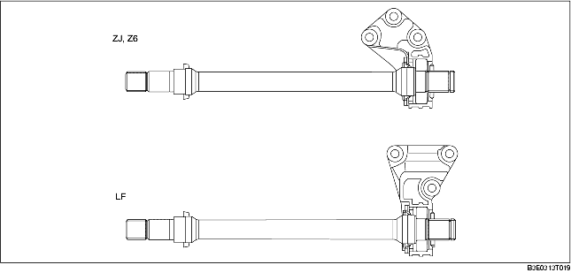

• A joint shaft has been adopted to make the right and left sides of the drive shaft isometric, reducing torque steer* when accelerating quickly from a standstill and improving driveability.

*Torque steer
The vehicle pulls to one side during acceleration from a standstill or normal acceleration due to a right-left difference in momentum created by engine torque.